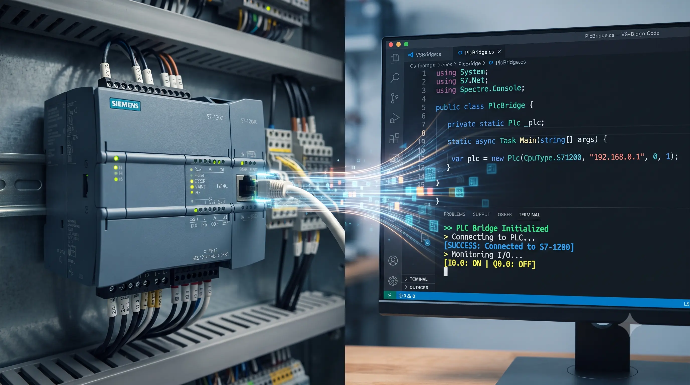

Dal terminale al PLC: costruire un industrial bridge in C# (e perché gli errori sono i migliori alleati)
Scritto da Marco Morello il 22 luglio 2026
💡 In sintesi: torno da tre settimane di trasferta in cantiere. Quando rientri a casa stanco ma con l'adrenalina addosso, senti il bisogno di riaccendere la passione sporcandoti le mani con il codice. Così è nato PlcBridge, un simulatore TCP/IP in C# per colmare la distanza tra il software gestionale e l'hardware industriale, accettando l'errore come parte fondamentale del processo di crescita.
Torno da tre settimane di trasferta in cantiere. Quando rientri a casa dopo giorni passati a risolvere grane sul campo, stanco ma con quella tipica adrenalina addosso, senti il bisogno di riaccendere la passione. Volevo qualcosa che mi restituisse la costanza, che mi costringesse a sedermi alla scrivania e a sporcarmi le mani con il codice.
La verità è che, a rigor di logica, avrei dovuto finire MotoLogPro e gli altri mille progetti personali che ho in cantiere. Ma sono fatto così: con i progetti personali tendo a spaziare, a saltare da un'idea all'altra seguendo l'ispirazione del momento. Sul lavoro invece sono una macchina, cerco di chiudere un task prima di passare al successivo per non lasciare nulla in sospeso e non accumulare mille code aperte. A casa, però, il codice è libertà pura.
Così è nato PlcBridge, un progetto di studio nato per colmare la distanza tra il software gestionale in .NET e l'hardware industriale, costruendo un simulatore TCP/IP passo dopo passo. Senza la pretesa di aver inventato nulla, ma con la determinazione di capire come funzionano le cose sotto il cofano.
La filosofia del "learn by doing": perché la teoria non basta
Nel software industriale, la distanza tra un concetto astratto e la sua implementazione pratica è immensa. Puoi leggere quanti libri vuoi sui socket TCP/IP, ma capirai cosa significa davvero gestire una connessione solo quando la porta 5000 rimarrà bloccata in background per un processo zombie, impedendoti di compilare.
Il learn by doing non significa improvvisare a caso. Significa:
- Accettare l'errore come parte del processo di compilazione mentale.
- Costruire mattoncino per mattoncino, partendo dalla riga di comando più scarna fino a un'architettura robusta.
- Validare rigorosamente, usando strumenti professionali come CI/CD e test automatizzati, perché il codice che scrivo oggi deve funzionare anche quando non sono al PC.
L'architettura: perché il polling batte il push continuo
All'inizio la tentazione è semplice: creare un server che spara dati a raffica verso chiunque si connetta. Ma nel mondo industriale la realtà è diversa. I PLC parlano quando è necessario, e i sistemi di supervisione interrogano i registri secondo una logica precisa.
Ho scelto quindi un'architettura request-response di tipo master-slave:
- Il client (HMI di monitoraggio): interroga attivamente il server inviando comandi testuali specifici (come la lettura della pressione).
- Il server (PLC virtuale): valuta la richiesta, simula fluttuazioni fisiche reali tramite logiche stocastiche (perché i sensori reali non sono mai piatti) e risponde con i dati formattati.
Dalla riga di comando scarna a una TUI professionale
Un programma che funziona ma è illeggibile è un software a metà. Se un operatore in cleanroom deve monitorare un impianto, non può interpretare stringhe grezze perse in un terminale nero.
Prima di fare il salto verso il web, ho scelto di evolvere la user interface introducendo una libreria per creare interfacce a riga di comando avanzate, le cosiddette TUI:
- Tabelle formattate: i dati chiave come pressione, temperatura e stato della pompa vengono presentati con una griglia pulita e leggibile a colpo d'occhio.
- Menu interattivi (selection prompt): invece di far digitare comandi a mano all'operatore — esponendo il fianco a errori di battitura e distrazioni umane — ho inserito un menu interattivo navigabile con le frecce. È il principio del poka-yoke, cioè a prova di errore, applicato alla CLI.
CLIENT/MONITOR di Supervisione
Seleziona il comando di controllo o lettura:
> READ_PRESSURE
READ_TEMP
START_PUMP
Da stateless a stateful: la memoria del PLC
Un vero PLC non si limita a generare numeri casuali: ha uno stato interno. Accendere una pompa richiede che il sistema ricordi l'azione nel tempo.
Nel mio PlcBridge ho introdotto una memoria di stato persistente per variabili come lo stato della pompa e i valori correnti. Ora il sistema accetta comandi di scrittura e controllo attuatori, trasformandosi da semplice script di test in un vero nodo bidirezionale.
// Stato interno del PLC simulato (memoria dei registri)
private static bool isPumpRunning = false;
private static double currentPressure = 12.0;
private static double currentTemperature = 22.0;
private static string SetPumpState(bool state)
{
isPumpRunning = state;
string statusText = isPumpRunning ? "[green]AVVIATA[/]" : "[red]ARRESTATA[/]";
AnsiConsole.MarkupLine($"[bold blue]Comando Attuatore:[/] Pompa {statusText}");
return $"SUCCESS: Pump is now {(isPumpRunning ? "RUNNING" : "STOPPED")}";
}Lezione imparata: gli errori come indicazioni stradali
Costruire software significa inevitabilmente sbattere contro i muri. Ecco alcune delle cicatrici tecniche che mi hanno insegnato di più in questo percorso:
- Il socket occupato: ho imparato che i processi server rimangono in ascolto finché non vengono terminati correttamente. Usare i comandi di sistema per chiudere un processo bloccato non è un ripiego, è igiene sistemistica.
- I messaggi di Git: i messaggi di errore non vanno temuti. Git non mi sta bloccando, mi sta chiedendo chiarezza su come gestire i repository remoti.
- CI/CD con GitHub Actions: configurare un workflow automatico significa avere una certezza fondamentale: la sicurezza che il codice compila e supera i test in un ambiente pulito, indipendentemente dal mio PC.
E adesso? Verso il web con Blazor
Questo progetto non è un punto d'arrivo, ma una solida fondamenta. Ho un server robusto, un protocollo chiaro, una CLI curata e una pipeline CI/CD pronta all'uso.
Il prossimo passo? Prenderò questo backend di comunicazione e lo porterò sul web con Blazor, per creare una dashboard interattiva accessibile da qualsiasi browser o tablet industriale.
La strada è lunga e l'umiltà tanta, ma i mattoni sono posati dritti. Meglio fatto ma non perfetto che niente: rimettere in movimento il sito e continuare a scrivere codice un pezzetto alla volta è l'unico modo per crescere davvero. Ci risentiamo alla prossima iterazione.